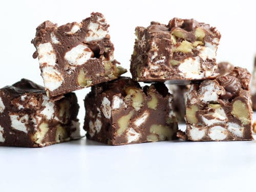

Rocky Road Fudge

Ingredients
- 1/3 cup unsalted butter, cut into chunks
- 1 cup evaporated milk
- 1 1/2 cups sugar
- 1/4 teaspoon salt
- 12 ounces semisweet chocolate chips
- 1/2 cup slivered almonds (roasted)
- 1 cup mini marshmellows
Directions
- Combine butter, evaporated milk, sugar and salt in a medium
saucepan. Bring to a hard boil for 5-7 minutes, stirring constantly.
- Remove from heat
- Stire in the chocolate chips until melted smooth.
- Fold in the almonds and the marshmallows.
- Pour into an 8-inch by 8-inch square baking pan.
- Chill until firm.
- Cut into 12 squares.